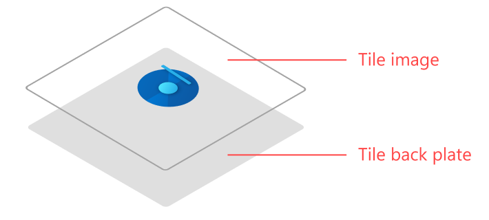
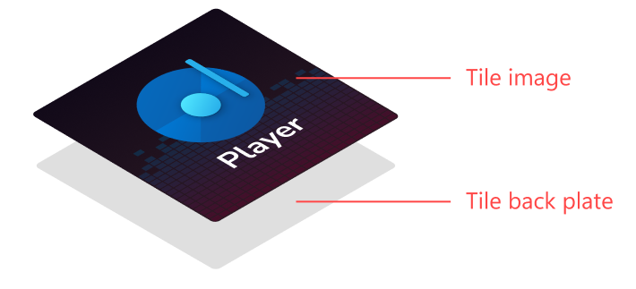

Construction guidelines for Windows 10 icons
Apps running on versions of Windows with Live Tile support have additional options for how their app's icon is displayed within its tile. Apps that choose to provide tile images should provide images for all tile sizes at all common scale factors.
Windows 10 October 2020 Update introduced theme-aware Start Menu tiles, which select the tile background color based on the user's theme rather than using the color specified in the VisualElement section of the application manifest. Apps can still choose a color that suits their tile background color for versions of Windows 10 prior to October 2020.
Creating an icon-based tile

The easiest way to look great on Live Tiles is to just display your app's icon against a transparent background. This is the "standard" way to do tiles. To achieve this look, you can either create tile images with transparent backgrounds, or just let Windows display your app's icon on a regular tile.
Creating a full bleed tile

When required, apps can create full-bleed Live Tile images to fully customize their tile. Typically, this functionality is used by games. Non-game apps should generally not use full-bleed tiles, because it will make your tile stand out awkwardly compared to "standard" icon-based tiles. Full bleed tiles can be used to achieve several looks.
Apps using a full bleed tile can make their icon any size they want. To do this, simply make your icon the size you would like it to display when the tile is shown. App icons should never take up the complete tile. Be sure to use at least 16% margins on each side.
Some apps, usually games, might want to display a full-bleed image instead of an icon. In this case, do not use margins - the image should take up all available space.